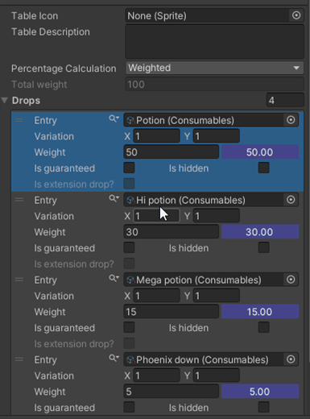
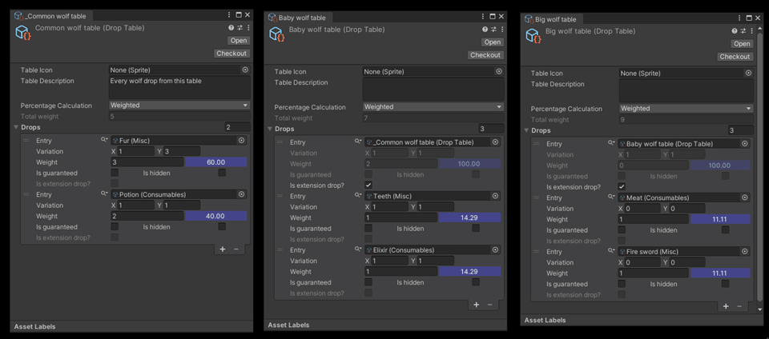

Overview
This overview was designed to provide you with the necessary information to fully understand how this plugin work, also create a terminology to help you to understand what something does just by seeing it's name. You can also find a small guide to demo inside the Demo folder that will provide you with an explanation about what each sample tries to demonstrate, it's a good way to understand it by looking directly at the commented code, if you are getting trouble understanding some specific API, just hit me up in discord and I'll try my best to help.
Core concepts
Core classes:
- Drop table: This is the drop container and control the calculation used thought the drops inside it (see below for more information about percentage calculation kind), also it's from here that you will control the drops properties, aside from other additional, for more specific cases, settings. It's inherit from scriptable object so you can create it the right-click context - right-click -> Create -> Drops -> New Table -. This has not only your drops but also the callbacks, modifier, and filters (we will talk more about these in the specific section), and it's from where you will request drops.
- Drops: A layer representing your drop settings, can only be accessed thought the drop table (on the inspector), controlling things like your entry, percentage to drop, amount variation, and other additional settings.
Those classes above you, probably, will change thought the inspector to setup your scenario, below we have classes that represent the answer of some requested operation and only exist in the code side.
- Bag: This is a container of Loot, when you request a drop from your Drop table you will get a Bag as result.
- Loot: This is a limited version of the drop that contains only the entry and the collapsed dropped amount (if your drop can vary between 3~7 units when randomized a loot will have a single value between the selected range), when you iterate over Bag you'll get Loot.
Modifier / Filter
We need to be able to modify and filter the drops at runtime. Loot has some events exposed to allow you to control the final outcome of a table, those events run in a specific order, let's see this order and then talk a little about each of them.
Global modify
- Applied to all tables
- It is invoked one time for each entry in the table requesting it
- It will provide context information though a Modify context
- Should be registered though class
private void Awake()
=> DropTable.OnGlobalModify += DoubleCurrenciesAmount;
// RULE: Drop 2x for each drop of currency type
private void DoubleCurrenciesAmount (ModifyContext ctx)
{
var currentDrop = ctx.CurrentDrop;
if (!(currentDrop.Entry is Currency))
return;
currentDrop.AmountRange *= 2;
}
Global modified
Note that most operations that could be done in Modified could also be done on Modify instead, but this event is called just one time per table, so if your rule is relying on some calculation, maybe is a good idea to add it here instead of on Modify
- Applied to all tables
- It is invoked one time per table requesting it
- It will provide context information though a Modified context
- Should be register though class
private void Awake()
=> DropTable.OnGlobalModified += MyCustomModified;
// If this table have 2 or more card, all MISC type items will get a bonus of flat 10% in drop chance
private void MyCustomModified (ModifiedContext ctx)
{
var modifiedDrops = ctx.ModifiedDrops;
// We are using ModifIED here instead of ModifY, cause we don't want to count amount of cards for each item that we go though
var amountOfCards = modifiedDrops
.Count(d => d.Entry is Misc m && m.name.ToUpper().Contains("CARD"));
if (amountOfCards < 2)
return;
var miscList = modifiedDrops
.Where(d => d.Entry is Misc);
foreach (var drop in miscList)
drop.Percentage += 10f;
}
Local modify
- Applied to referenced table
- It is invoked one time for each entry in the table requesting it
- It will provide context information though a Modify context
- Should be registered though instance
public DropTable monsterTable;
private void Awake()
=> monsterTable.OnLocalModify += GuaranteeCurrency;
// All CURRENCY that have COIN in name will be guaranteed to drop
private void GuaranteeCurrency (ModifyContext ctx)
{
var currentDrop = ctx.CurrentDrop;
if (!(currentDrop.Entry is Currency))
return;
if (!currentDrop.Entry.name.ToUpper().Contains("COIN"))
return;
currentDrop.IsGuaranteed = true;
}
Local modified
Similar to global modified but its applied only only the current referenced table instead of all
- Applied to referenced table
- It is invoked one time per table requesting it
- It will provide context information though a Modified context
- Should be register though instance
public DropTable monsterTable;
private void Awake()
=> monsterTable.OnLocalModified += MyCustomModified;
private void MyCustomModified (ModifiedContext ctx)
=> // TODO: think in a sample to insert here \o/
Table filter
This operation will filter your table using Predicate<Drop, bool>, keep in mind that the item must pass thought all filter to appear in the iteration
- Applied to referenced table
- It is invoked one time for each entry in the table requesting it
- It will provide the current Drop though callback signature
- Should be registered though instance
public DropTable monsterTable;
private void Awake()
=> monsterTable.AddFilter(MyFilterRule);
// If player is cursed, show only cursed items
// If player is not cursed show only no cursed items
private bool MyFilterRule (Drop drop)
=> drop.Entry is Item item
&& item.cursed == player.IsCursed;
Additional concepts
Let's take a look at some additional important concepts that reside inside Loot:
Percentage calculation
In the drop table inspector we can see an enum field called percentage calculation. This field will change the way that drop percentage/chance is calculated
Simple: Each drop has its percentage individually, this means that when we ask for a drop, the table will try to drop each entry individually. i.e. suppose that we have two drops A and B, and each one has 50% to be dropped, when we ask for a drop, our result bag can have A, A and B, B or nothing (empty bag), also as the entries are independent changing the percentage of one entry will not interfere in another percentage.
Weighted: The percentage of each drop depends on the sum of the weight of each item, and the sum of all percentages should always be 100%, this also means that when we ask for a drop the table will give to us only one drop from the list. i.e. continuing with our A and B example, if each one weights 1, this means that each has 50% to be dropped, our result bag possibilities are A or B, also if we change our B to weight 2 this will make our A change from 50% to 33% and our B change from 50% to 66%, because the sum of weighs is 3, A percentage is equal to their weight (1) divided by the table weight (3), so A = 1/3 = 33% and B = 2/3 = 66%.
Guaranteed
Toggling it will make your drop always drop.
Note that requesting a drop from a weight table that has guaranteed drops will give to you a bag with all the guaranteed drops plus one of the non-guaranteed drops.
Also take in count that it will remove the drop from the total weight sum, as you can see in the gif below.

Hidden
Toggling it will make your drop to not appear on iterations, will not be able to be dropped and also, as expected, will not be take in count for weighted tables. Think in it like an secret drop that will have a chance to drop just when player makes a specific action.
Extension drop
This feature is created to allow you to have hierarchy drops mixing multiple drop tables and treat all then as a unique table. Take the following example in count: in your game every wolf drops a fur, also every baby wolf drops a teeth then you have a Blue Baby wolf enemy that, as the name suggests, drops things from wolf table, baby wolf table and also some custom items specific from this kind of wolf. You can toggle this feature into the drop on inspector:
Important: Note that we can enable it on _Common wolf drop entry and can't on Teeth entry. This option will be enabled only when the entry is another Drop Table AND the percentage calculation between two table are equal.
When this option is enabled the entry will not be treated as a drop (so you will not get it when iterating over this table, instead you will get the union between two drop tables), and in the case that your table is a weighted one, the weight from inner tables will interfere in outer tables, as we can see in the following gif.

Enumerators
We provide some enumerators to allow you to have different views of the current table, you can change the view altering fields of the Filter when calling a custom enumerator or can use some of the our pre made enumerators.
Default enumerator
This is our implementation of IEnumerable<Drop>, it will internally call the default behavior of the custom enumerator that is:
- Include all drops that isn't hidden nor extensions
- Open all extension drops until we have none of them OR have reach at max depth, this maximum can be changed on Loot.Settings
- While opening extensions skip tables that are already added (check repetition by table reference)
- Remove all drops marked as hidden
- Clone all drops and
- Apply all the modifiers and filter
NOTE: modifiers and filters are applied on runtime only, so calls used in the editor will skip those invocations
foreach (var drop in monsterTable)
{
// Do something...
}
Raw enumerator
A sugar to give you a copy of your drops as you see them in the drop table inspector
- Included drops still a cloned version of original drops
- Do not open extensions, so will your receive just the properly extension drop
- As we don't open extensions we check for repetitions
- Include hidden drops
- Does NOT apply any modifier or filter
foreach (var drop in monsterTable.RawEnumerator())
{
// Funny operations...
}
Custom enumerator
This is the base enumerator that others will rely on, all of them call this enumerator using custom filter settings, but you can call it yourself and set the view that you want to receive, for example
var myCustomFilterSettings = Filter.IncludeHiddenDrops | Filter.DontInvokeLocalModify | Filter.DontInvokeLocalModified;
foreach (var drop in monsterTable.CustomEnumerator(myCustomFilterSettings)) { }
here we will receive the default behavior with the following changes
- We will include drops marked as hidden
- We will skip the invocation of local modifiers